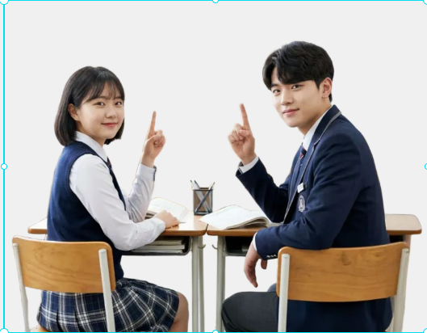
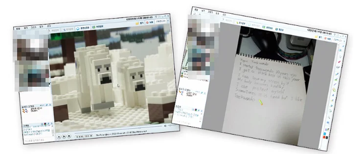
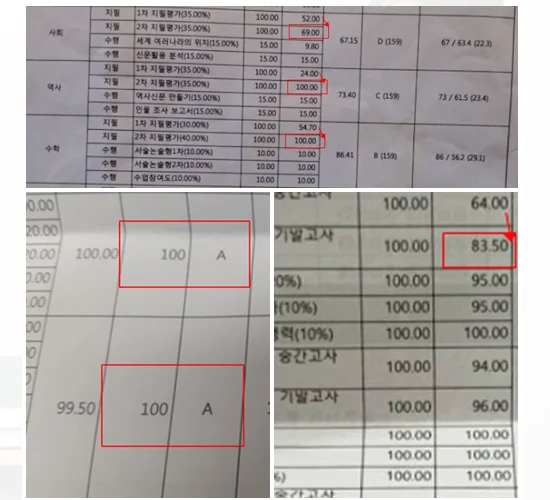
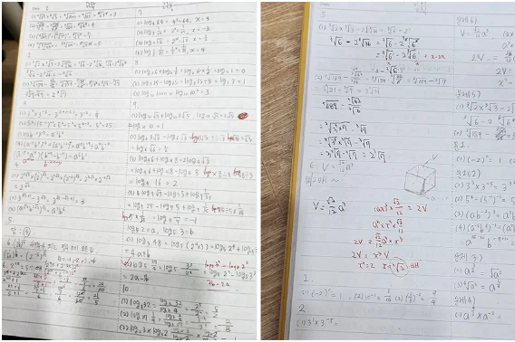
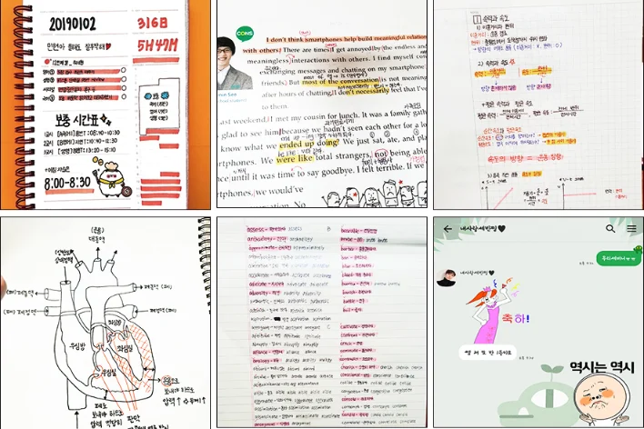
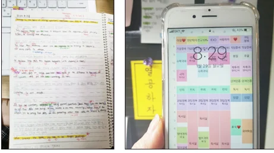
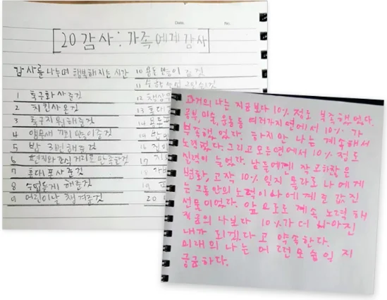

VISIT
VISIT
방문과외
선생님이 학생의 집으로 찾아가 마주 앉아 진행하는 1:1 수업
- 대면 1:1 수업
- 직접 피드백
- 집중 관리
- 익숙한 공간

방문과외부터 실시간 화상수업까지, 학년·과목·학습 목표에 맞춰 수업 방향을 설계합니다.
두 방식 모두 선생님과 학생이 1:1로 진행합니다. 학생의 상황에 맞는 방식을 골라보세요.
VISIT
선생님이 학생의 집으로 찾아가 마주 앉아 진행하는 1:1 수업
 ONLINE
ONLINE
각자의 공간에서 화상으로 연결해 실시간으로 진행하는 1:1 수업
학년마다 필요한 공부가 다릅니다. 아래는 일반적인 학습 목표이며, 실제 수업 방향은 학생 상황에 맞춰 정합니다.

한글·수학·영어 기초와 학교생활 준비를 아이에게 맞는 속도로 진행합니다.

교과 기초를 탄탄히 하고 스스로 공부하는 습관을 만들어 갑니다.

과목별 개념 이해를 바탕으로 학교 내신과 시험 준비를 시작합니다.

내신과 수능 목표에 맞춰 과목별 학습 계획과 취약 단원을 관리합니다.
한글떼기부터 초등 입학 준비까지
학교 진도부터 내신·수능까지
회화부터 읽기·쓰기까지
학생별 목표에 맞춘 특별과정
시그니처과외 1:1 수업을 추천하는 학생

학생에게 맞는 공부 방법을 찾고 꾸준히 관리한 결과입니다.
단어·내신 관리
오답정리·유형 점검
취약영역 보완
1:1 맞춤 학습
성적이 오르기까지 학생이 직접 남긴 수업 화면, 노트, 계획표입니다.

화면을 함께 보며 실시간으로 질문하고 바로 피드백합니다.

지필·수행 점수가 오른 실제 성적표 일부입니다.

풀이 과정을 직접 쓰고, 틀린 부분은 다시 풀어 확인합니다.

영어 지문 분석, 과학 구조도, 단어장까지 스스로 정리합니다.

하루 공부 시간을 계획하고 지켰는지 함께 점검합니다.

목표를 적고 돌아보며 공부를 대하는 태도가 달라집니다.
결과는 공부시간이 아닌 공부방법에서 달라집니다
성적 변화부터 공부 습관, 목표 달성까지 실제 수업 사례를 확인해보세요.
“영어가 제일 자신 없는 과목이었는데 선생님이 틀린 문제를 하나씩 같이 정리해주셔서 문제 푸는 방법이 조금씩 보이기 시작했어요.”
“수학 문제만 보면 막막했는데 수업하면서 풀이 순서를 정리하는 습관이 생겼어요. 시험 때도 예전보다 훨씬 덜 긴장했습니다.”
“혼자 공부할 때는 뭘 먼저 해야 할지 몰랐는데 매주 계획을 같이 잡아주셔서 공부하는 습관이 생겼어요.”
“모르는 개념과 문제 유형을 하나씩 꼼꼼하게 짚어 가며 공부했어요. 할 수 있다는 확신이 생기면서 통합과학 1등급까지 받았습니다.”
방문과외와 실시간 화상수업 모두 같은 원칙으로 수업을 설계하고 관리합니다.
현재 수준과 목표를 확인하고 학생에게 맞는 수업 방향을 정합니다.
선생님과 학생이 1:1로 마주해 이해 속도에 맞춰 진행합니다.
유아부터 고등까지 학년과 과목에 필요한 내용을 다룹니다.
수업마다 이해도와 진도를 확인하며 부족한 부분을 짚습니다.
수업 후 피드백으로 학습 방향을 점검하고 꾸준히 관리합니다.
학생의 학년·과목·목표를 확인합니다.
현재 수준과 목표에 맞춰 수업 방향을 정합니다.
학생에게 맞는 선생님을 안내합니다.
실제 수업 후 학습 방향을 다시 점검합니다.
학생에게 맞춘 1:1 수업을 시작합니다.